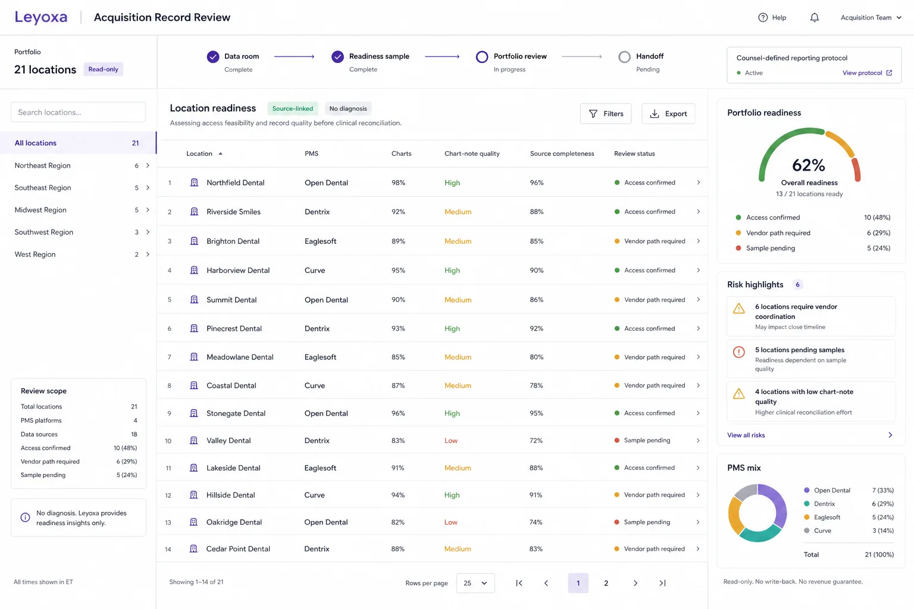
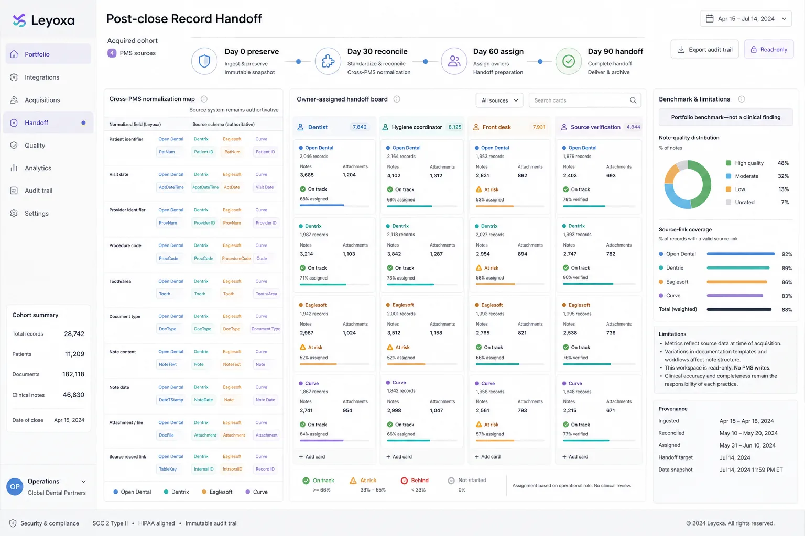

Sample access and record depth
Confirm locations, PMS mix, close date, authorized purpose, chart-note quality, privacy boundary, and extraction path.
Available now · Manual-first, fixed-fee engagement
Leyoxa packages source-linked exceptions, record continuity, documentation gaps, migration verification, limitations, and buyer sign-off into one accountable acquisition artifact.
Planning range: $7,500–$15,000 for a readiness sample; $15,000–$30,000 for one full location. Final fixed scope follows access and quality review.
Dental buyers already review charts for clinical and billing risk. Migration teams validate that records moved. Leyoxa is designed to preserve those boundaries while adding a source-linked view of unresolved record states and the work required after close.
Clinical, billing, documentation, compliance, and valuation questions remain with the buyer's qualified advisors.
Counts, identifiers, dates, notes, documents, imaging references, and reconciliation exceptions are validated.
Source-linked record states are routed to dentist review, the next visit, coordination, or source verification.
Context: dental acquisition guidance already treats patient chart review as due diligence and asks whether recommended treatment is recorded. See the California Dental Association toolkit ↗ and Minnesota Dental Association workbook ↗.
The first sample measures access feasibility, source completeness, and chart-note quality by location. A weak record or unproven PMS path becomes a stated limitation—not an inflated reconciliation promise.

The engagement proceeds only when the data path, record quality, and reporting responsibility are explicit.
Direct database, approved export, vendor relationship, or third-party access is confirmed for each PMS.
If the documentation is too thin to support reliable reconciliation, the scope is reduced or stopped.
Counsel should approve how record states, limitations, known follow-up obligations, and handoff responsibility are documented.
A transaction-timed portfolio project—not another practice subscription.
The review is priced as a fixed acquisition and integration engagement—not per-seat SaaS. The quote and responsibility schedule are confirmed after the readiness sample and before production access.
Location count, PMS mix, required field depth, access path, and delivery timing determine the fixed fee.
Source-linked record states, accountable queues, audit trail, methodology, stated assumptions, and limitations.
Vendor fees, diagnostic review, PMS writes, patient outreach, added cohorts, and ongoing real-time operations are separate.
The report distinguishes records found, work the team can absorb, and value that may convert. Recorded plan value is never presented as revenue.
Product direction · After close
With separate authorization, the same source and ownership model could inform an Owner Morning Brief and governed operational workflows without pretending every location uses the same stack.

The review is intentionally read-only. Broader operational workflows require a separate purpose, permission model, connector review, and human-approval design.
Leyoxa returns source-linked record states for dentist review.
The practice-management system remains authoritative.
Any later voice, scheduling, or payer workflow is separately configured, approved, and audited.
Recorded plan value and opportunity ranges are context, not promised revenue.
Leyoxa will scope a bounded readiness sample before production access or a portfolio-wide promise.
Scope an acquisition review